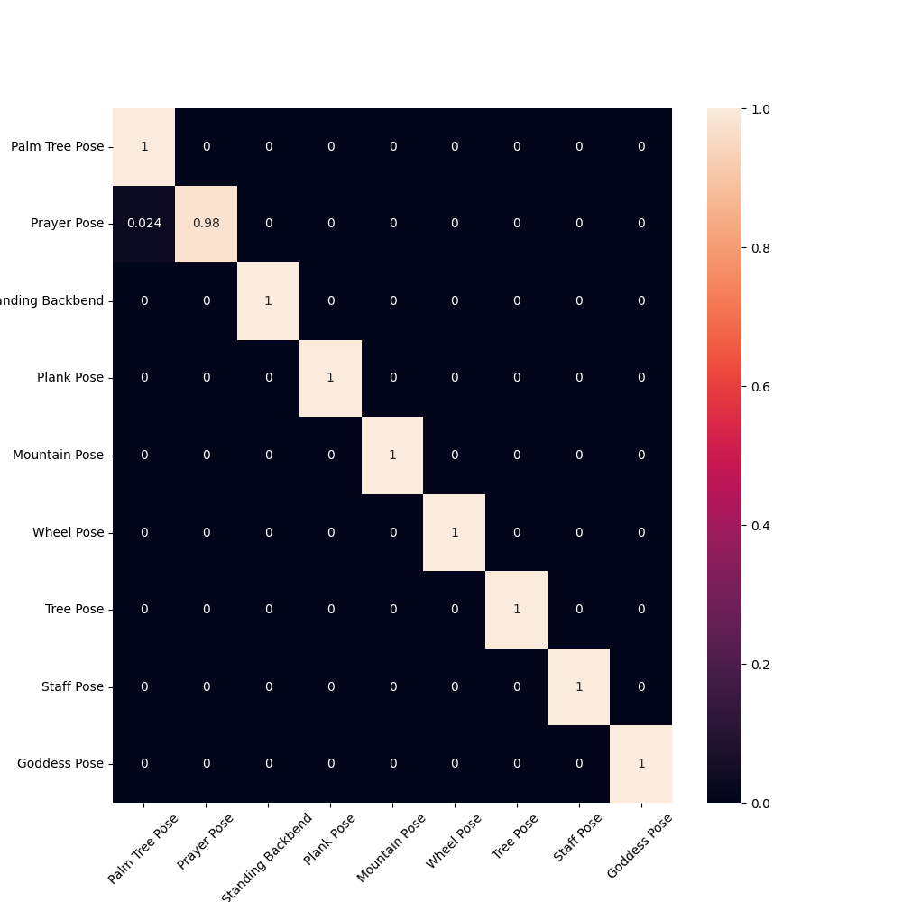

Overview
Yoga is about 5000 years old and one of the ancient and proven forms of exercise for gaining fitness. It is the most used complementary health approach in the US. The yoga industry is projected to reach $215 billion by 2025. There is a lack of on-demand access to quality feedback while performing yoga.
We partnered with a smart yoga mat manufacturer, YogiFi, that uses the heatmap from the pressure-sensitive, smart yoga mats to classify yoga poses and provide recommendations to its customers. However, due to heatmap signatures being the same for some yoga poses, with difference being only in the upper body postures, YogiFi had challenges classifying them.

Palm Tree Pose
Â
Prayer Pose
Standing Backbend Pose
Features
- An AI powered web application that addresses significant pain point in yoga by providing accurate feedback on alignment and posture.
- It offers a non-intrusive solution that respects user privacy.
- It leverages latest advancements in Machine Learning, Computer Vision and the best practices of Software Engineering to provide a low-cost serverless architecture hosted on Amazon Web Services (AWS).
- Our solution has the potential to be applied to other fitness domains.
How it works
SensAI leverages state-of-the-art Machine Learning solutions and Software Engineering best practices to provide a low-cost, serverless yoga assistant hosted on AWS. The application is set up using Infrastructure as Code to quickly bring up all of the application infrastructure and optimize developer efficiency. The front-end is a React app hosted on AWS Amplify, We use Amazon cognito for managing users and AWS Sagemaker serverless inference endpoint backed by API gateway, to host our model and to make inference.
Datasets
Our primary dataset is the heatmap data collected from the pressure-sensitive smart yoga mats from YogiFi. This dataset contained 13,571 unique heatmaps for 58 yoga poses.
We create a secondary dataset using yoga pose images obtained from Yoga-82 and yoga pose images shared by YogiFi. Using TensorFlow's Movenet model, we extract 17 keypoints for 952 yoga pose images corresponding to 9 yoga poses.
Modeling
We evaluate four different approaches to yoga classification. The first two are uni-modal models where we try classifying using the heatmap from the smart mats, provided by YogiFi, and the keypoints that we extracted from the yoga pose images of Yoga-82 and yoga pose images from YogiFi, using TensorFlow's Movenet model. The other two are multi-modal models which use early fusion and late fusion techniques.
Each heatmap has 1320 values, which can be represented as a 60x22 image. These images are used to fine-tune a pre-trained EfficientNet-B0 convoluted neural network (CNN). We apply various pre-processing transformations such as denoising, extracting contours and centering.
We train a custom neural network using 17 keypoints extracted using Tensorflow's Movement model from yoga poses curated from Yoga-82 and YogiFi's yoga pose images. The keypoints are centered and normalized before being fed into the neural net model.
In the early fusion model, we augment the heatmap data with the keypoints data and transform it into an image where the last three rows contain the encoded keypoints data.
In late fusion, we run the two uni-modal trained independently on the two modalities i.e. heatmaps and kepypoints and then combine the outputs from the last layers and feed it into a classfier.
Results
The heatmap model has 94% accuracy and is able to decluster most of the yoga poses. However, the model performs poorly on 3 clustered poses. mainly because the heat maps are identical and the yoga asana difference lies only in the upper body posture.
The keypoints model has 95% accuracy, implying that keypoints are able to decluster most of the poses. However, the model performs poorly on postures that are only different in the hand gestures and facial orientation since the Movenet model we use to extract keypoints does not capture them. We see that with the keypoints model is still not able to decluster all of the poses.

The results from the early-fusion validates our hypothesis that we can use multimodal model to decluster the yoga poses that we were not able to with just the heatmap. However, we still see from the confusion matrix, while it improves upon the uni-modal model, the model has some trouble classifying these clustered poses.

The late-fusion model was to achieve high training and validation accuracy of nearly 100%. The confusion matrix shows that it is able to classify almost all of the poses with only a fraction of poses being falsely predicted.
Demo
Meet the team
Atreyi Dasmahapatra
Project Manager
Ajeya Jayaram
Front-end Engineer
Andrew Sotoodeh
ML Engineer
Pavan Emani
Data Engineer
Shannie Cheng
Applied Scientist
Acknowledgements
We would like to extend our gratitude to our instructors - Fred Nugen and Ramesh Sarukkai for their support and guidance. We thank YogiFi's Sankar Dasiga, Muralidhar Somisetty & Vinod Ajjarapu, who provided us with the smart yoga mat and shared their heatmap dataset with us.